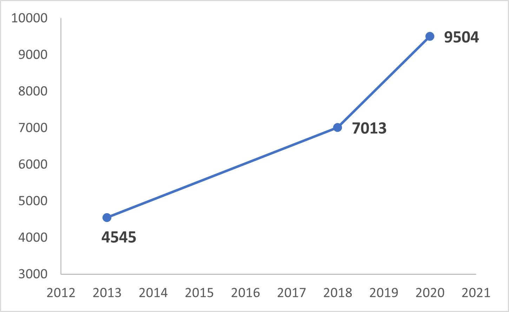
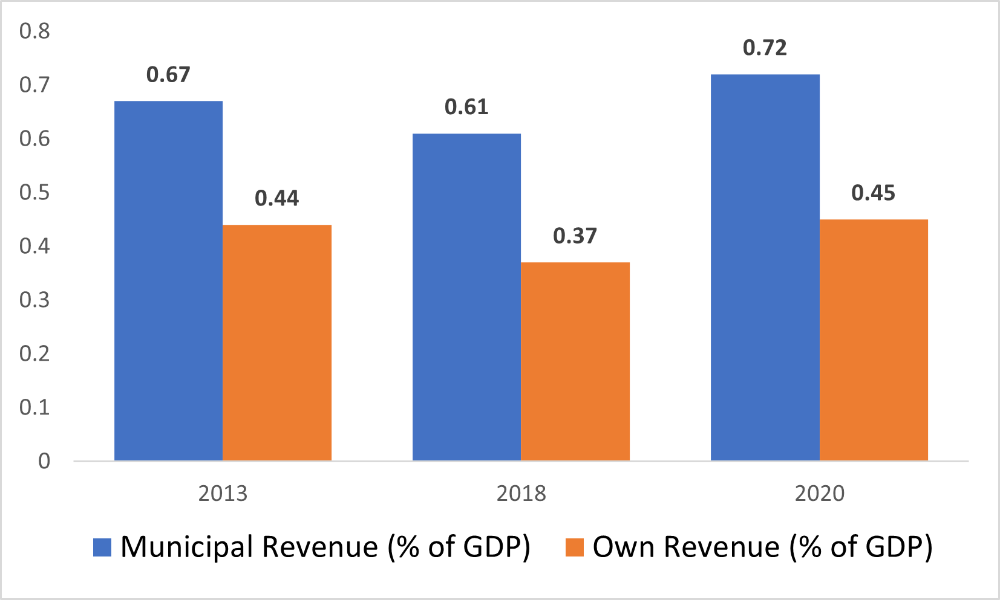
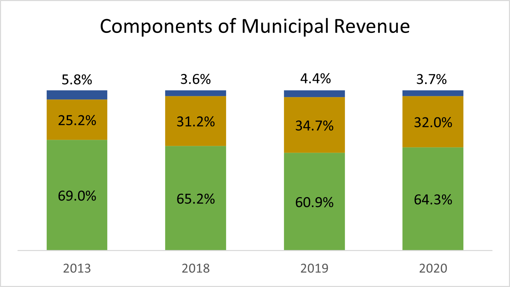
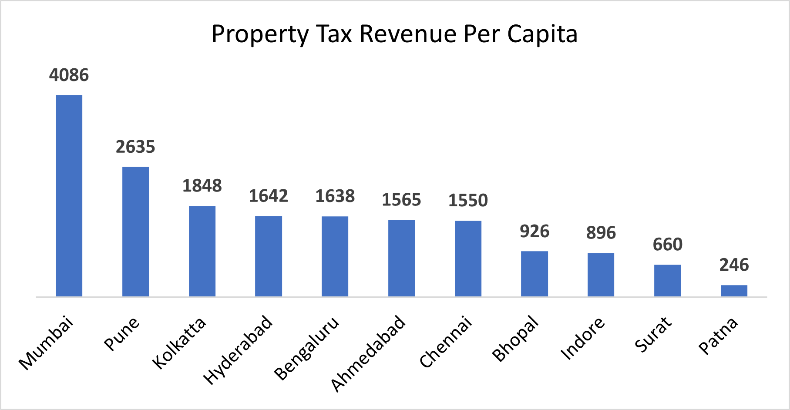
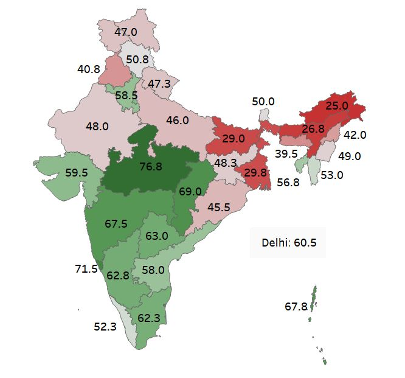
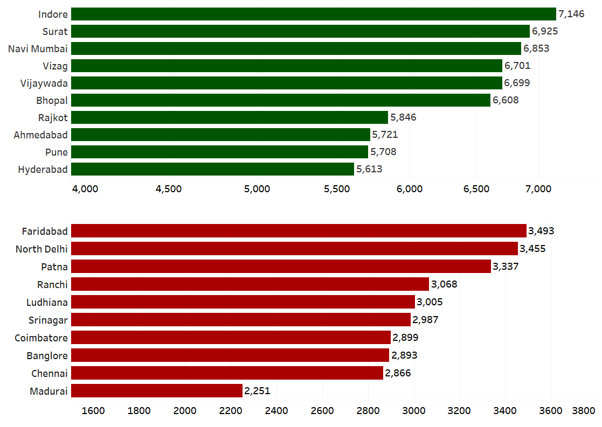
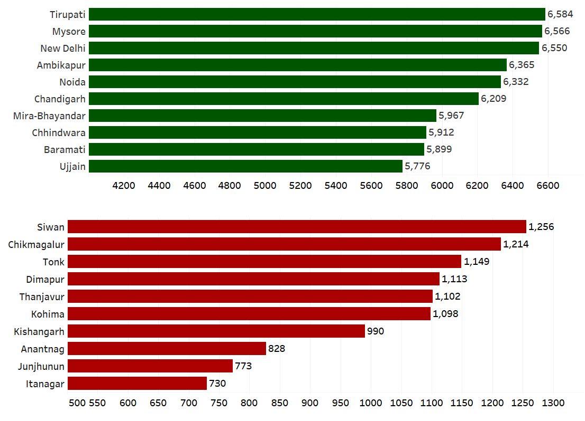

The governing structure in India is made up of three tiers - the central government, the state
government, and the local self-government. The local self-governments are further divided into urban
local bodies and rural local bodies. The 73 rd and 74 th amendments to the constitution (1992) give
recognition and protection to the local self-governments in India. Urban local governments include the
Municipal corporations (generally for settlements with population > 500,000), Municipal councils
(generally for settlements with population > 25,000 and < 500,000) and Municipal committees
(generally for settlements with population > 10,000 and < 25,000). India is getting rapidly
urbanized,
and it is expected that the urban local governments will provide the citizens with basic infrastructure
and services like roads, health care centers, water supply, sanitation, solid waste management,
maintenance of public property etc. Let us take a look at couple of key issues faced by the urban local
governments in India and the resulting poor service delivery to the citizens.
Data Sources - Report on Municipal finances by RBI (2022), Annual Report 2020-21 on
Implementation
of Solid Waste Management Rules by Central Pollution Control Board, Best practices in municipal solid
waste management by NITI Aayog (2021), Swachh Survekshan results 2022 and multiple newspaper &
research articles.
- Poor Financial Health
Indian cities have grown at a rapid pace, but the municipal revenue needed to govern the cities
has not
grown proportionately. The municipal corporations in India are struggling financially and remain
largely
dependent on the state government for transfer of funds. While cities contribute to more than
60% of
India's GDP, the municipal revenue in India is below 1% of the GDP. This value is much higher in
other
countries (Brazil - 7.4% and South Africa - 6%). Furthermore, more than 35% of this municipal
revenue
comes from the funds transferred by the state and central governments.

Per Capita Municipal Revenue (Rs) for 2012-13, 2017-18 and
2019-20 (estimated)

Municipal and Own Revenue as % of GDP for 2012-13, 2017-18 and
2019-20 (estimated)
Note - Own Revenue = Municipal Revenue - Funds transferred by state and
central governments.

Components of Municipal Revenue for 2012-13, 2017-18, 2018-19
and 2019-20 (estimated)
Green - Own revenue, Mustard - State fund transfers, Blue - Central fund
transfers
We have listed a few key reasons for the revenue crunch faced by the municipal corporations in India:
- Inefficient property tax collection - Property tax collection is one of the most important
source
of own revenue for the municipal corporations. Property tax collection in India is much lower
than OECD countries due to property undervaluation, incomplete registers, and ineffective
administration. Also, there is a large variation in the per capita property tax collected in
different cities. However, it has been observed that the property tax collection in Pune,
Chennai, and Kolkata along with some other cities has improved significantly according to
estimates for the year 2019-20.

Per capita property tax collection (Rs) 2017-18 of various
municipal corporations
- Implementation of GST - After the implementation of GST, taxes like octroi & it's variants
and
advertisement tax were subsumed in GST. This reduced the tax revenue from sources other
than property tax.
-
Dependence on state governments for funds - The share of state transfers in the total
municipal revenue is quite significant. State governments are required to constitute State
Finance Commissions (SFCs) every five years. SFCs are expected to spell out the principles to be
applied for determining the allocation of funds to local governments and the range of taxes and
non-taxes to be devolved to them. However, state governments have not set up SFCs in a
regular and timely manner and hence in most of the states, SFCs have not been effective in
ensuring rule-based devolution of funds to local governments. The municipal councils and
municipal committees are dependent on the state governments for funds to an even greater
extent than municipal corporations. It has been observed that the state governments are
generally reluctant to grant greater financial independence to the urban local governments.
- Devolution of Power to Urban Local Bodies
12th Schedule of the Indian Constitution deals with the provisions that specify the powers,
authority,
and responsibilities of Municipalities. This schedule was added by the 74th Amendment Act of 1992.
But, in reality, functions such as fire and rescue services are not even devolved on to the ULBs and
many other functions like the maintenance of roads and bridges, electrification and related works,
etc.
are devolved partially as there are parastatal organizations entrusted with similar duties as of the
Municipal corporations. The parastatal organizations mostly report to the state government and the
coordination between them, and the municipal corporations is generally poor. This causes poor
service
delivery and citizen engagement. The number of parastatals is going up as the states show reluctance
to devolve various functions to the municipal corporations.
- No Say in Urban Planning
Instead of the municipal corporations, state government-controlled development authorities mainly
carry out urban planning in most of the major cities of India. These are bureaucratic agencies with
no
accountability to the urban local government. In absence of proper planning, the municipal services
find it difficult to cope with the increasing needs of the population. The administrative machinery
of
the local bodies is also often insufficient to deal with the increasing population.
- Poor Service Delivery
From potholed roads to piles of garbage on the streets and from traffic congestion to poor public
health centers, the list of grievances of people living in cities is endless. Insufficient funds,
lack of
coordination between municipal corporations and parastatals, inefficient administration, political
tussle between local & state governments and corruption are some of the reasons which result in
poor
service delivery to citizens.
- Building and maintenance of urban roads - India boasts of a vast network of urban roads.
However, the quality and maintenance of these roads is a huge concern. The pothole ridden
roads in Indian cities have been responsible for innumerable accidents, especially during the
monsoon season. These roads also need to be repaired with alarming regularity. The situation
was aptly described by a union minister who sarcastically remarked - “Maintenance is a subject
that makes everyone — politicians to officials and contractors — happy. Frequent maintenance
work brings a lot of satisfaction, though the public is the only loser. Contractors get upset
when
decisions are taken for durable roads as they feel they will lose their business.”
- Solid waste management - The urban solid waste management scenario in India has improved
at a rapid pace in the past decade, although a lot still remains to be done. The percentage of
urban solid waste treated has risen from 19% in 2015-16 to 50% in 2020-21 while the
percentage of urban solid waste landfilled has fallen from 39% in 2015-16 to 18% in 2020-21.
The door-to-door collection of waste and its segregation has improved over the years and the
number of composting and biogas plants has also gone up. However, there is huge variation in
the performance of different states and municipalities when it comes to solid waste
management.

Solid Waste Management scores of Indian states and UTs
(Annual Report on Solid Waste Management (2020-21), CPCB, Delhi)
| City |
Door to Door
collection (%) |
Solid waste
processed (%) |
Best practice |
| Indore |
100% |
100% |
Segregation of solid waste at source. |
| Ambikapur |
100% |
100% |
Landfill management. |
| Surat |
100% |
100% |
Material processing. |
| Gangtok |
90% |
63% |
Plastic waste management. |
| Pune |
100% |
100% |
Sanitary waste
management. |
| Bengaluru |
100% |
53% |
Technological innovation. |
| Thiruvananthapuram |
10% |
54% |
Innovative model
(Economically sustainable
decentralized approach). |
| Mysore |
100% |
70% |
Biodegradable waste management. |
Table 2.a - Solid waste management best practices of different
cities
(Best practices in municipal solid waste management by NITI Aayog)
- Public health and education - Municipal corporations across the country also run some schools
and health centers for the cities' populace. The municipal schools in India are typically
characterized by shortage of teachers, high student to teacher ratio and very poor
infrastructure. Public health care centers and hospitals run by the municipalities too face
infrastructural shortcomings and acute shortage of medical staff as they cater to a much larger
population than what they are designed for. Public health & education remains one of the few
areas where there has not been any major improvement over the past decades (barring a few
exceptions) and this deprives the urban poor of quality and affordable healthcare &
education.
Shortage of funds and the ineptitude of officials & local politicians are the major reasons
which
prevent a large-scale facelift of this sector.
- Cleanliness and sanitation - Indian cities perform very poorly with regards to cleanliness and
sanitation when compared with their counterparts in Europe or America. To be fair, in this case,
the blame is shared by both the citizens and the urban local governments. However, in the last
decade there has been an increased national focus on cleanliness and beautification of cities.
According to the Swachh Survekshan 2022 which ranked the urban local bodies (ULBs) based on
various cleanliness and sanitation parameters; Madhya Pradesh, Chhattisgarh and Maharashtra
were the front runners in the > 100 ULBs category while Tripura and Jharkhand were the front
runners in the < 100 ULBs category.

Scores of best and worst cities with > 10L population (Swachh
Survekshan 2022)

Scores of best and worst cities with < 10L population (Swachh
Survekshan 2022)
- Steps to Empower Urban Local Bodies and Improve Service Delivery
Below is a list of actions which we believe will greatly help in improving the local governance
in
Indian
cities:
- Improving the Municipal Revenue -
- Better and efficient property tax collection (use of GIS a possibility).
- Efficient collection of user charges and fines.
- Regular and timely setting up of State finance commissions.
- Better financial databases and account audits at local level.
- Clear separation of powers and duties between the parastatals and urban local bodies.
- Including urban local self-government in urban planning.
- Creating decentralized platforms like area committees for discussions between people and the
elected representatives.
- Creating a robust, technologically aided mechanism for grievance redressal of the citizens.
- Encouraging public-private partnership and private investments in various local development
projects.
References -
- Report
on Municipal finances by RBI (2022)
- Finances
of Municipal Corporations in Metropolitan Cities of India by ICRIER (2019)
- Annual Report 2020-21 on
Implementation of Solid Waste Management Rules by Central
Pollution Control Board
- Best
practices in municipal solid waste management by NITI Aayog (2021)
- Swachh Survekshan results 2022
- Urban
local government in India
- Functions of municipal corporations
- Problems of Urban
Self-governance in India